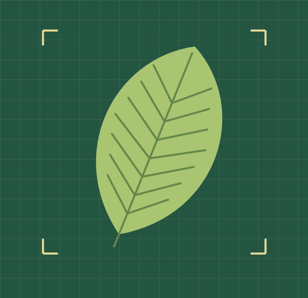

1. Escanea
Toma una foto de la hoja con la guía en pantalla.
AgroScan analiza la hoja de tu papa o maíz en tu celular y te explica el resultado en voz alta, en español o quechua.

En una chacra sin señal, reconocer una plaga a tiempo puede evitar un viaje y un tratamiento equivocado.
Toma una foto de la hoja con la guía en pantalla.
Recibe una explicación en español o quechua, incluso sin internet.
Revisa los pasos sugeridos y consulta a tu técnico si tienes dudas.
Consulta desde la parcela. El modo Sol mejora el contraste y el modo guantes amplía los botones.
Registra una inspección con fotos y ubicación. Evita pasar los mismos datos de la libreta a Excel.
Consulta el mapa de casos y avisa a tus socios cuando aparezca un posible brote.
Elige una hoja de ejemplo para ver cómo se presentaría el resultado en la app.
Simulación con resultados de ejemplo.
Diagnóstico, voz e historial de parcelas. La descarga estará disponible cuando se publique la app.
Ver cómo funcionaPanel de casos, mapa de calor, alertas y reportes para los socios.
La app está diseñada para analizar hojas en el celular y sincronizar los registros cuando vuelva la señal.
La primera versión está pensada para papa y maíz.
AgroScan sirve de apoyo. Un técnico puede revisar los casos dudosos.